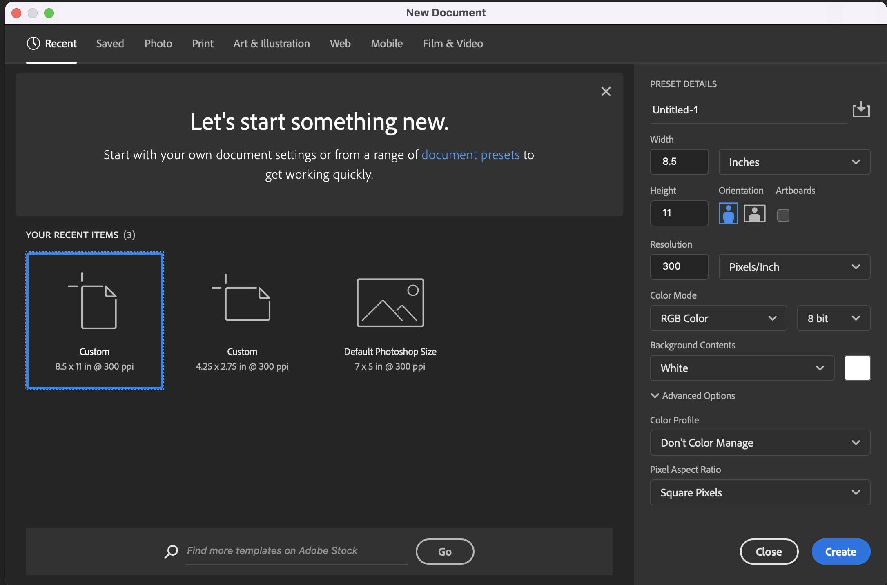
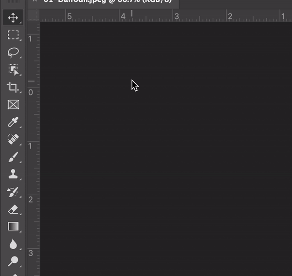
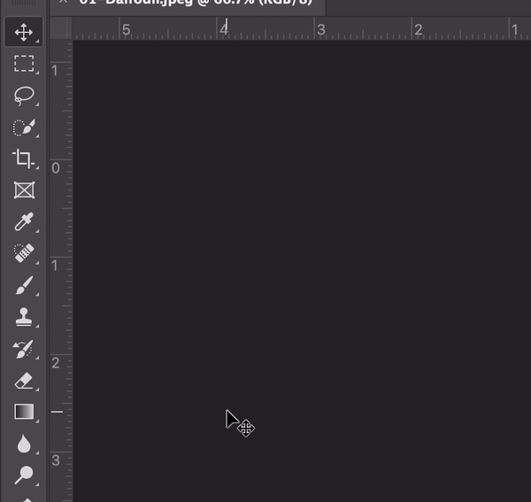
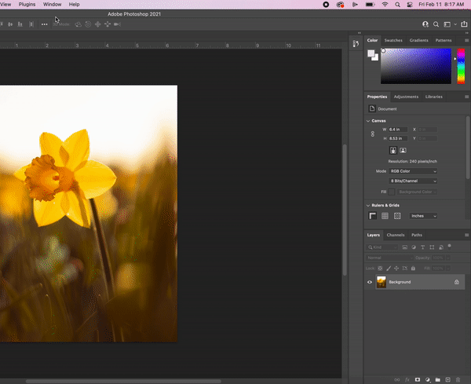
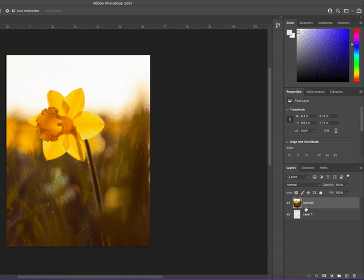
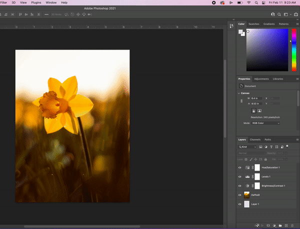
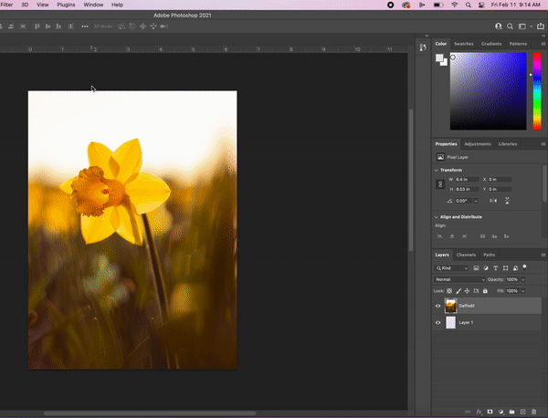
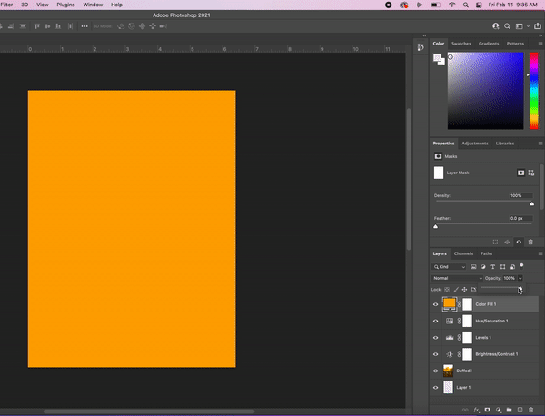

Photoshop Reference Sheet
Purpose
This reference sheet is exactly that: a reference sheet. Use this as a guide for basic photoshop instructions on your workspace, tools, and more.
Links
HOW TO CREATE A NEW PROJECT
File > New… > Custom > Title your project > **8.5 Width x 11 inches Height** > 300 Resolution
OR…
**Dimensions set in this demonstration are for creating a Magazine Cover**
 Return to top.RESET YOUR WORKSPACE
Window > Workspace > Essentials THEN Window > Window > Workspace > Reset Essentials Return to top.
Return to top.
WHERE ARE ALL OF THE TOOLS?
On the left of your workspace...
Your tool panel will have a line of tools stacked from top to bottom.
if you hover over the tool you will get a brief description of each tool.
If you click and hold over a tool that has a small arrow, you will get a hidden list of other tools you can then click on to use.
 Return to top.TOOLS QUICK KEYS
Most tools will have a quick key that you can toggle for fast access.
To know what the quick tool key command is, hover over the tool and at the endof the tool name is a letter.
Example: Move tool = V
Likewise in the top navigation bar, most editing adjustments will have a quick key command.
 Return to top.LAYERS PANEL
What are layers? Layers in Photoshop allow you to work non-destructively by stacking images and edits on top of other images without interacting and mixing the pixels of images.
If you can’t see your layers panel…
Click Window > Layers
 Return to top.DUPLICATE LAYER
My recommendation is to always create a duplicate layer as a non-destructive way of editing your images
In your layers panel…
Right click on the layer you would like to duplicate > Duplicate > Rename appropriately > OK
 Return to top.LAYER ADJUSTMENT
Adjustment layers let you make changes to your image, such as adjusting brightness without permanently altering the actual pixels.
Use the small black/white circle at the bottom of your layers panel to create a layer adjustment of your choice. Your layer adjustment will automatically create a new layer in your layers panel.
What does each layer adjustment do? Jump to How to make layer adjustments…
 Return to top.LAYER ADJUSTMENT PANEL
The second way is to use your adjustment panel to create layer adjustments.
To see your adjustment panel…
Go to Window > Adjustments
In the adjustments panel hover over the adjustments available to expose the names > click on a adjustment you like to apply to edit your image.
 Return to top.LAYER VIEWING AND EDITING
The eye icon next to the layer thumbnail in the layers panel tells you that the layer is visible. Click the eye icon to hide or show images in your layers panel
When you are making adjustments to your layers, be sure to click on the specific layer you intend on adjusting. By clicking specific layers maintains the order of your layers.
 Return to top.
Return to top.
REARRANGE LAYERS
Layers of an image are organized in what’s called the stacking order. The stacking order determines how the image is viewed.
In the layers panel...
Drag layers up or down to make images appear in front or behind other layers.
Return to top.LAYER OPACITY
Select the layer you wish to adjust the “transparency” or known as “opacity” Click the arrow next to the opacity field to display the opacity slider Drag slider left or right (you can also type a specific number).
 Return to top.